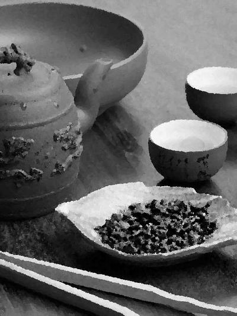

Чайный Дракон

Описание товара
Познайте чайный дзен от истинных ценителей данного искусства. Ощутите себя Мастером древнего искусства чай-бор.
Характеристики товара
- Продолжительность: 3 года.
- Место квеста: Тибет.
- Сложность: средняя.
Подробное описание товара
Вы будете находится на горах Тибета, где сможете отдохнуть от городской суеты и сможете статать настоящим ценителем данного искусства.
Вас будет обучать монах, который является мастером своего дела уже в десятом поколении. Данные знание будут переданы только вам, так как у вас есть тайная печать "чайный дракон".
Вы познаете каждый шаг приготовления различных видов чая, от простых до магических.
Начиная свой путь со сборщика листа и до сенсея чай-бора.
В финальной битве необходимо будет при помощи различных напитков и продуктов из чая, победить соперника из враждующего клана, познающего искусство кофе-бора!
Начальная комплектация исходных материалов НЕ зависит от статуса Ивентодержателя в клубе.
Обратите внимание! Необходима первичная подготовка для овладения навыком "Ментальная область" и синхронизация сигнального оборудования
Условия доставки
Ивентодержатель для сохранения тайны местонахождения:
- должен сдать все гаджеты и электронные устройства, определяющие местоположение
- может быть обследован на наличие вживленных устройств слежения
- вывозится с завязанными глазами
Обеспечение безопасности
Ивентоисполнитель обеспечивает безопасность игрока снабдив место Ивента и Ивентодержателя следующими устройствами:
- Ракетница с сигналами зеленого цвета
- Ракетница с сигналами красного цвета
- Кнопка экстренного "извлечения"
- Спутниковый телефон и запас аккумуляторов для него, для гарантированной работы в течении года
Для сохранения аутентичности происходящего, данные объекты располагаются в ментальной области Ивентодержателя и активируются мнемословом.
© 2019 ncux11. Все права защищены
© 2019 ncux11. All rights reserved.